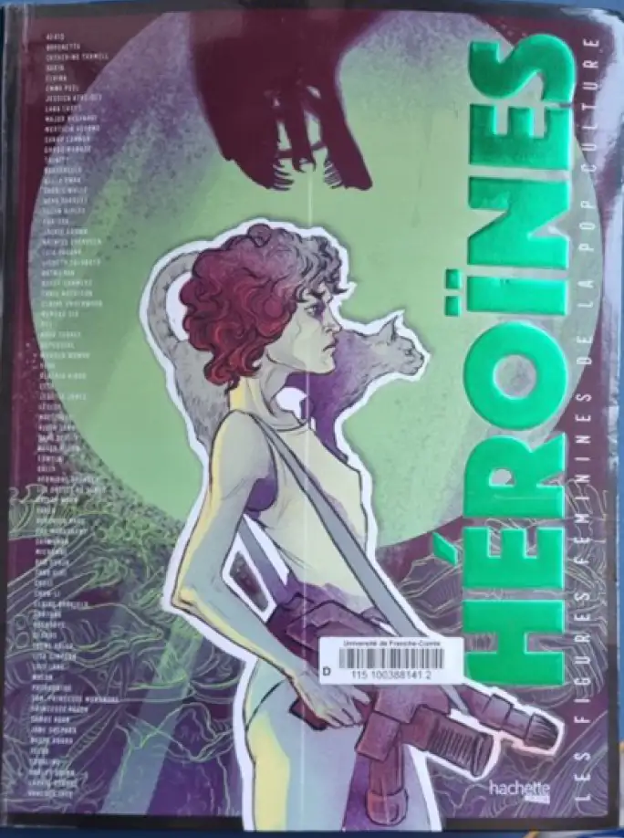
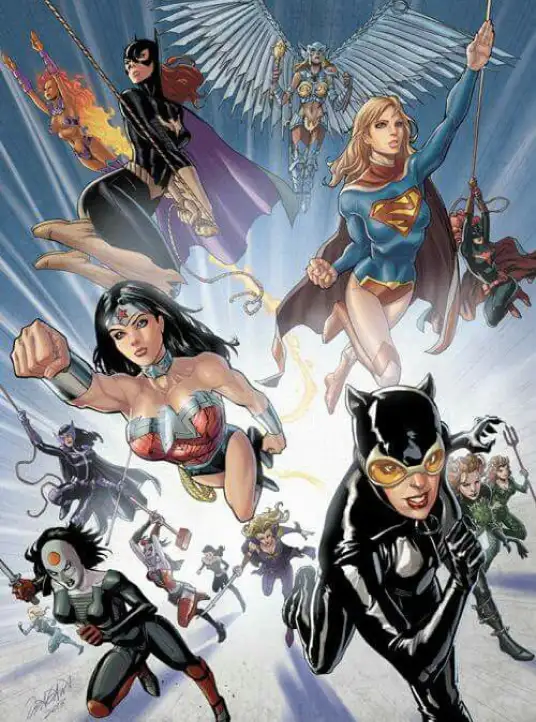

Oeuvre
Héroïnes
This work aims to promote all female characters created to date, exploring all media, from cinema to comics, not forgetting literature, video games and television series.
who
In 2017 an all-female team made to reference a rendering of glory to the various female characters. The authors: Marilys Vallet, Margot Poujol, Mathilde Degore , Lise Benkemoun , Bounthay Sulivay, Mélanie Bourdaa Célia Haro , Nazrie Djedoui. The illustrators Abigail Larson, Peach Momoko , Lenka Simeckova, Maguerite Sauvage , Chiara Di Francia , Sibylline Meynet. It is these women who have made the reading and visibility of this book
Why
"The heroic female figures present in these pages are of all kind, warrior goddesses, fragile, mothers or murderers. They embody all the facets of the feminine and they also demonstrate the evolution of women's struggle and the changes in society, which is slow to find a balance that is nevertheless essential. They also prove the obvious porosity that will always exist between the real and the imaginary, as one will always exert a real magic on the other, to the point of not knowing very well where the tipping point is between the two. All these icons, inspiring and inspired, all these portraits. All these portraits are the work of women with diverse and varied backgrounds, all these illustrations too. Simone de Beauvoir announced in DEUXIEME SEXE "It is very difficult for a woman to act as an equal to a man. As long as this equality is not universally recognised and concretely achieved". All these heroines are still imaginary and are equal to men. They are sometimes even superior to them. The way in which we are inspired by them, the way in which we claim them, will enable them, conversely, to act in depth on reality. " Emilie Colas, the brain behind this operation, tells us
Female figures in pop culture
For the past decade or so films with female leads have been making a leap forward. Several examples are good as one of the first of our era: Lara Croft: Tomb Raider 2001 Catwoman 2003 Lara Croft: Tomb Raider, Cradle of Life 2003 Street Fighter: Legend of Chun-Li: 2009 Maleficent 2014 Wonder Woman 2017 Tomb Raider 2018 Maleficent: The Power of Evil 2019 Captain Marvel 2019 Terminator: Dark Fate 2020 Mulan 2020 Birds of Prey and the fantabulous story of Harley Quinn: 2020 Wonder Woman 1984: 2021 Black Widow 2021 Ou encore des séries tel que : Supergirl 2015 Marvel : Agent Carter : 2015 Marvel's Jessica Jones : 2019 Batwoman 2019 WandaVision 2021
All these films and series have aimed to reduce to nothing the stereotypes that reduce the place of women to the kitchen or the weakness of women. And to show that women can also be strong and have a good heart. Little by little things are changing and fortunately so that we and future generations can evolve.

Facets : Each of the various aspects presented by someone, something
Porosity : State of a poorly protected border, which can be crossed illegally at various crossing points
.Illustrations :All engravings, drawings, reproductions, etc., documentary or artistic, added to the text of a work
.Universally In a universal way, by everyone
Women and comics
We will focus more specifically on two on two heroines from two major publishing houses. publishing houses.
.webp)
Gal Gadot
Gal Gadot also known for being the incarnation of wonder woman on on our screens. She is not only that, you can find out more about her here ....
.webp)